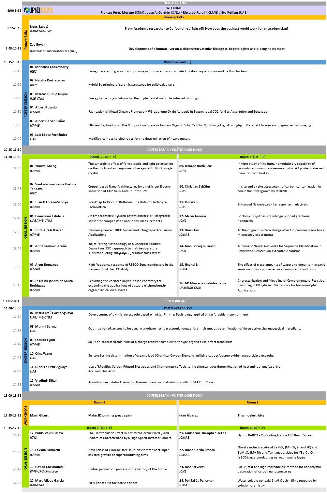
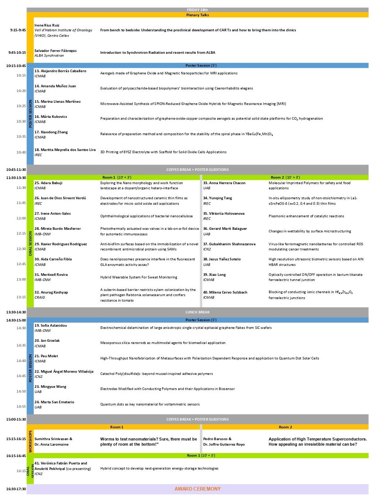

2020
5th Scientific Meeting of PhD Students at UAB campus
Bellaterra, September 17-18, 2020
Welcome
From a small gathering of "ICMAB students" in 2011, "JPhD - the scientific meeting of BNC-b students" has finely matured over the years as an organized networking and dissemination platform. We are pleased to announce the comeback of the conference in 2020. The "5th Scientific meeting of PhD students @ UAB campus 2020" is aimed to gather, disseminate and communicate among the PhD students of the Barcelona Nanotechnology Cluster – Bellaterra (ICMAB, ICN2, IMB-CNM, UAB), promoting collaborations between them in an academic and scientific environment. The event incorporates the entire framework of the UAB campus, as well as other universities like UB, UPC or any other research centres and universities. The meeting structure of the 5th edition will include the usual oral presentations and posters. Furthermore, we also have some high profile speakers to enlighten us about different research trends and career paths in research. What more? We also have practical workshops on trending technologies such as 3D printing to learn and explore new avenues, foster collaborations and bring out great ideas! Come join us and get the opportunity to meet other PhD students, share your experience and research, make scientific friends and have scientific fun!!


Programme


Workshops
Worms to test nanomaterials? Sure, there must be plenty of room at the bottom!
Caenorhabditis elegans (C. elegans) or round worms are small worms with 60% genetic homology to humans. They are transparent which enables facile visualization by optical microscopy and they exhibit short life span and fast reproduction cycle facilitating the evaluation in the whole life cycle. Use of C. elegans as animal models surpasses the complex process of obtaining ethical animal rights, provides us with a large sample size (around 1000 worms per group!), and can be used even in a chemical synthesis laboratory for a safe-by-design approach to design novel nanomaterials! The workshop will include a short introductory presentation showing the advantages, state of the art, future avenues and challenges. Later, the participants will be trained with a "video-demo" to handle the worms and carry out some maintenance and growth experiments, as well as some interesting photos and videos of the worm world and nanoworld shown to the audience.
Application of High Temperature Superconductors. How appealing an irresistible material can be?
High Temperature Superconducting (HTS) materials are composites that behave as superconductors at temperatures above 73.15 K (−200 °C) under atmospheric pressure, allowing them to become operational in a fairly simple liquid nitrogen environment. The majority of useful high-temperature superconductors are in the class of copper oxides, more specifically the (Re)BaCuO perovskites. The HTS workshop shall start with a short presentation about superconductivity history, types of superconductors, their properties (zero resistivity, Meissner effect…), operational advantages and disadvantages of each type, applications and the future HTS community goals. Afterwards the participants will be instructed in the handling of liquid nitrogen to help in a set of 2 "demo" experiments with HTS wires: magnetic levitation and current limitation.
Organizers
- ICMAB: Angel Campos, Jose Jurado Piers, Sumithra Yasaswini Srinivasan, Nerea Gonzalez, Jewel Ann Maria Xavier, Pedro Barusco, Miquel Torras, Sohini Sinha, Pamela Machado, Fabiao Santos
- CNM: August Arnal, Alberto del Moral, Dmitry Galyamin, Marina Navarro Segarra
- ICN2: Pilar Bernicola, Marta Delga, Saptam Ganguly
- UAB: Anna Ruiz, Marti Raya Moreno, Konrad Eiler
Venue
- 17 September 2020: CNM
- 18 September 2020: UAB
Contact
JPhD2020 Coordinator
Institut de Ciència de Materials de Barcelona (ICMAB-CSIC)
Campus de la UAB
E-08193 Bellaterra, Spain
Tel: +34 935 801 853 · Fax: +34 935 805 729
E-mail: jphd2020@icmab.es